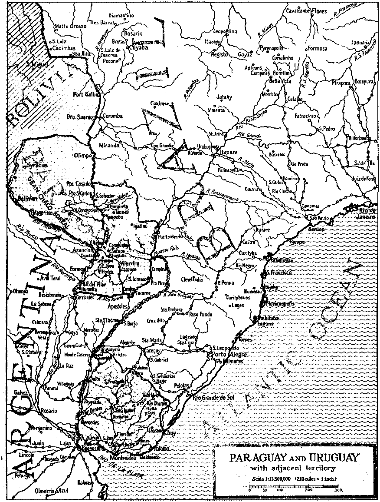
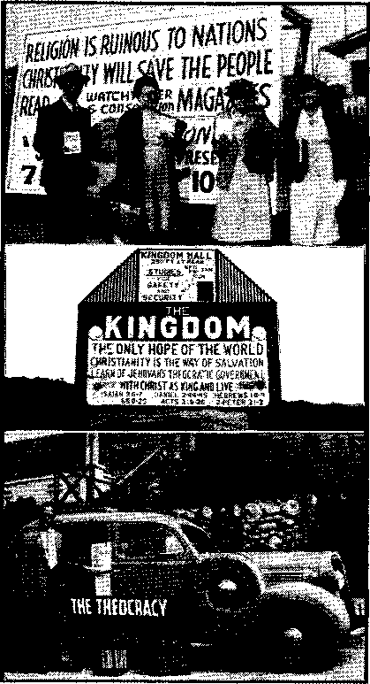

Paraguay, the First Spanish - American
Independent and Progressive Uruguay
“Thy Word Is Truth”
Fuel Oil Rationing in Baltimore
“Free Nation’s” Assembly in Brazil
Presenting “This Gospel of the Kingdom”
Position of the Roman Catholic Hier
archy Toward the Bible (Part 1)
Notanda
Shoes Without Thread
♦ There is a possibility that shoes without thread will be coming along soon. The shoe parts are assembled on a last with cement between the parts to be united. The assembled shoe is then placed in an airtight rubber bag, the air is pumped out, and the bag collapses and presses together the parts to be joined. As soon as the cement has set the shoe is a finished product. The Du Ponts hold this patent, and it looks like a practical thing. The process is said to be simple and speedy. ■
Three-Year-Old Waves for Help
♦ Near Vincennes, Ind., a woman auto-■mobilist was fatally injured when her car left the road and overturned in a field. Her three-year-old daughter, uninjured, crawled out of the car, went to the highway, waved for help, and caught the eye of the first truck that came along. What a proof this is of how wise it is to take the little folks to the study classes so that they may learn about God’s kingdom! Some children of 7 have more common sense than some of 70*..
One Way to Have a Convention
♦ One way to have a convention is to get somebody else to pay the bills. This came to light in New Jersey when the new governor, Charles Edison (son of the famous inventor Thomas Edison), vetoed a bill allotting $50,000 to the American Legion toward the expenses of their convention at Atlantic City.
Greeting the Man He Dumped Overboard
♦ In an English hospital a wounded Canadian • soldier had the rare experience of seeing, still alive, a man he had thouglit. dead after the raid on Dieppe, and had helped to throw overboard. The plunge irito the water revived the unconscious man and he kept afloat until picked up by a rescue ship. ’
“And in His name shall the nations hope.”—Matthew 12:21, A.R.V.
Volume XXV Brooklyn, N, Y., Wednesday, January 1®, 1944 Number 635
Paraguay, the First Spanish-American Republic
THE same year that Pizarro made his contract to seize the Inca government of. Peru, namely 1526, Sebastian Cabot sailed 800 miles up the broad waters of the Parana river, and then some 50 miles up the Paraguay river, thus discovering the land now called Paraguay. Seven eventful years passed. Pizarro, welcomed by the Inca Atahual-pa, had first made an agreement with him, involving a vast ransom in gold and silver, and then imprisoned and murdered him. .
Two more years passed. It was now the year 1535. The Spaniard Pedro de Mendoza, seeking a river route to Peru, also sailed 800 miles up the Parana to its junction with the Paraguay. Then he turned up the Paraguay, went up it 240 miles, and when he’came to a beautiful hill on the east bank of the stream, he founded there the city of Asuncion, and in 1537 established Paraguay as a province of the viceroyalty of Peru.
Paraguay is a river country, and in a way it may be likened to the great state of Missouri; only it is very much larger. Here is the situation. Along its southern and much of the eastern boundary is the great Parana river. It is good to know something about that river. Not only is it the second-largest river of South America, but it has a 'length and discharge greater than the Mississippi, which, in this likeness, it is made to resemble, and it has a drainage area nearly three times as large. Its annual flow is three times that of the St. Lawrence, and five times that'of the Nile. It is 2,720 miles long from its source to its embouchure into the La Plata. Ocean-going steamers, if they dp not draw too much water, can at certain times go as far up the river as Puerto Mendez, Brazil, far up on the eastern shores of Paraguay. See map on page 8. Generally speaking, the Parana river is navigable for its whole length, though broken by falls, the Urubupunga, just above where the Rio Tiete empties into it and at another falls just below where the Rio Pequiry comes in. The Iguassu falls, it may be explained, are 20 miles up the Iguassu river from the Parana, which accounts for their being so accessible to tourists and others. They are among the finest in the world.
The Paraguay river, corresponding, in this sketch, to the Missouri river, is the republic’s most important waterway. It is navigable for practically its entire length of 1,800 miles; ocean steamers go as far up as Concepcion. Asuncion, the leading port, nearly a thousand miles from the sea, has 122,966 population, about a tenth of that of. the country. AJillipns of dollars have been spent in improving this port. It has a well-established reputation as a healthful place. The other principal towns are shown on the map.
In Paraguay it has been said, “Each town has its river; each house its brook”; and it is quite true. The country is described as “one of the best-watered countries in the world”. That is one of the reasons why this city, founded 83 years before the Pilgrim fathers landed at Plymouth, still stands. In 1776 the city and
the country were transferred to the newly formed viceroyalty of Rio de la t ■ Plata (Argentina). In 1810 Paraguay joined with the other South American states in declaring its independence of the mother kingdom of Spain, and, owing to its isolated position, it was the . earliest of all the South American coun-‘ tries to establish completely its independence. , _
The Indians whom the Spaniards found in Paraguay belonged to many . tribes, but possessed a common language, the Guarani.
The Guaranis of Paraguay proved to be extremely difficult to subjugate. In the year 1600 the Spanish general Hernan-darias de Saavedra undertook to exterminate the Charruas, akin to the Guarani tribes, and his army was itself exterminated. With that, Hernandarias petitioned Philip II, king of Spain, that, as it was impossible to subdue the Charruas by force of arms, missionaries must be resorted to. This was a dirty trick, but it worked. The job was turned over to the Jesuits, who were promised that they might have the Indians, body ' and soul, with all their possessions, if they would but conquer them. Each villa or tribe was turned over to two Jesuits, who speedily organized them into a most remarkable body of obedient and industrious servants. Everything the Indians did from then on was for the benefit of the order of the Jesuits, who fed them, clothed them and provided them with all their simple necessities. The magnificent churches which were built consumed a large part of the income, as is the Catholic practice;
To prevent others from interfering with their work of complete subjugation or' “reduction”, as they called it, the Jesuits turned each villa or tribe into a huge stockade. No one was permitted to enter or to leave without a written order. Only such Indians might ride horseback as" looked after livestock.. Admittance was refused, not only to other Indians, but to other priests, and even the Spanish authorities. .
After a century and a half the Spanish government concluded that the job of subjugating the Indians had been overdone, and on February 27, 1767, Carlos III issued a mandate that the Jesuits themselves must leave the country. They complied within one year, but in that year they had so successfully arranged matters that when they left the Indians were scattered to the four winds and the country reverted to barbarism.
In the sections of Paraguay not under the thumb of the Jesuits, other means of subjugating the Guaranis were adopted. The Spanish general Ayloas'stipulated in a treaty with the tribe that seven women should be provided for himself and two for each of his soldiers. If you have wondered why there are more mestizos in South America than there are Indians and Spanish, now you know.
In his book, Inside Latin America, John Gunther, well-known author, writes:
Paraguay is the country where 60 to 70 percent of the people are illegitimate, where a distinguished general may have 80 children, and where everyone is good-humoredly related to .everyone else. [Page 271]
Although the official and commercial language of the country is Spanish, yet Guarani is the common language of the people to this day, and is adopted even by recent immigrants. The largest group of people in the country is a merging of Spanish and Guarani Indian blood. The Indians were chiefly agriculturists. Though Jesuits brought them into subjection, and they continued to live side by side with their conquerors, the culture of the country remained distinctly Indian. It is calculated that there are now about 20,000 aborigines left in the wilds. Negroes are unknown.
Paraguay has granted to 6,000 Mennonites complete and perpetual immunity from military duty and exemption from participation in war even as noncombatants. This is the more remarkable for the reason that Paraguay is accounted one of the most warlike nations in the world. More of this later.
The industries of Paraguay are and always have been peaceful ones. When -the Spaniards came upon the Guarani they found them living in an earthly paradise. The climate is mild and varied; the mountains are low; there is extensive drainage; there is plenty of rain; there is ’much fertile soil; there are broad "grass lands and there are deep forests. The extensive plains are excellent for pasturage and agriculture, and the forests hold many treasures.
The Paraguayans live on corn, rice, beans, sweet potatoes, and manioc, a starchy edible root that is the staff of life among the natives. The livestock population is four times the number of human inhabitants. Exports consist of cattle hides, canned meat, cotton, sugar, tobacco, quebracho tanning extract, yerba mate (Paraguay tea), and tung oil.
Paraguay is noted for its wonderful ' oranges, but millions of them go to waste at present because there is no way to get them to market. The republic has but 274 miles of railroads and practically no highways that penetrate the region where the oranges grow. Oranges raised near the railroad and near the Paraguay river are shipped in large quantities to Buenos Aires.
* The manufacturing plants, what there are in the country’, are mostly in the hands of Argentineans, British, and
x Americans. .
The present area of Paraguay, asad-justed by the Chaco Arbitral Award of 1938, is officially estimated at 1.69,266 square miles. It is thus somewhat larger than California with its 158,693 square miles,, and larger than Missouri and Kansas combined. '
From the Asuncion plateau southward, near the confluence of the Paraguay and Parana, there is a vast stretch of marshy country, draining partly into the Ypoa lagoon; and smaller tracts of the same character are found in other parts of the lowlands, especially in the valley of the Paraguay. Most of the country which slopes toward the Parana is covered with dense forests; the native tribes and the principal estates are in this section.
It is generally agreed that at least 20,000,000 people could live comfortably in Paraguay, if they lived in peace.
A Series of Dictatorships
Though nominally a republic, and often with a workable constitution, Paraguay has been mostly in the hands of dictators from its beginning until now, when it is in the same predicament. How the dictator business was started in Paraguay and what it led to is set forth in the Encyclopaedia Britannica thus:
In 1811, following the outbreak of the Hispanic American wars of independence, Paraguay resisted efforts from Buenos Aires to expel Spanish authority, but soon set up its own government; by 1814 it was under the dictatorship of Dr. J. G. R. Franeia. After Francia's death, in 1840, the chief power passed to Carlos Antonio Lopez, who was succeeded by his son Franciseo Solano Lopez in 1862. Franeia and the elder Lopez had developed a strong Paraguayan army. The latter had fruitlessly sought adjustment of Paraguay’s boundary disputes with Argentina and Brazil. The younger Lopez attempted a , vigorous foreign policy, and in 1864, on the occasion of Brazilian armed intervention ii> an Uruguayan civil war, went to war with Brazil [his manifest object being to have an outlet for his country on the Atlantic]. In order to strike at southern Brazil [see the map on page 8] he attempted to cross Argentine territory early in 1865. The result was the alliance of Argentina, Brazil, -and , Uruguay for the purpose of overthrowing Lopez and obtaining a settlement of Argeh-r tina’s and Brazil’s disputed boundaries with Paraguay on' their own terms. Invasion of Paraguay followed. A tenacious five-year
’ struggle, involving huge loss of life and of treasure, was terminated only by the complete defeat of the decimated Paraguayan forces and the death of the fleeing Lopez at Aquida-■ban [near Horqueta, on the map], March 1, 1870. During this warfare every able-bodied Paraguayan was in active service, while whole battalions of women and regiments of boys * of 12 to 15 years of age were formed. The bravery of the Paraguayans became a tradition, and from a population of 1,337’439 at the outbreak of war, the country was reduced, according to some estimates, to less than a quarter-million, of whom but 28,746 were men.
Thereafter, only the Argentine-Brazilian rivalry enabled Paraguay to recover its independence. Actually, a Brazilian army of occupation remained in the country from November, 1870, to 1876. The newspaper and book stories of the times say that .the younger Lopez, accomplished, educated in French, Spanish and Guarani, was captivated and . egged on by Mme. Eloisa Lynch, whom he met in Paris, and who shared his fortunes with him. She was tall, quiet, handsome, self-possessed, and, though never married to him, ruled his household, and was the power behind the throne. Lopez shot generals who lost battles, and himself set an indomitable example, often scoring great victories almost immediately after £reat defeats. The woman was allowed to return to France, where she lived quietly in Paris for several years, after Lopez's death.
The Chaco conflict with Bolivia (see the section marked “Gran Chaco Boreal” on the map) has already been quite fully discussed in these columns. See Consolation No. 631, page 13. The northern portion of the country is in the tropics, while the bulk of the settled portion of the country is in the south temperate zone. The rainfall in the Gran Chaco Boreal is during October to February 'inclusive; Floods inundate large sections of the Chaco during that season, whereas during the dry season water becomes extremely scarce in the interior and de'ep wells must be relied upon for most drinking water. East of the Paraguay river the rainfall is more evenly distributed. While the Chaco will eventually be one grand orchard, yet it is now, for the most part, a region of low, grassy plains, swampy in spots, dotted by palms and scrub vegetation.
In August, 1932, when the war with Bolivia over the Chaco was on, a thousand school children at Caacupe asked permission to form a regiment. They did this because they had read in their history books that in the war of 1864-1869, when Paraguay was fighting Brazil, Uruguay and Argentina, there were whole regiments of boys from 12 to 15 years of age. This shows how important it is that children should be taught the truth in their school books. And it may be added at this point that the largest donor of gold for the Chaco war was the parish church of the same town, Caacupe. The priest back of this would be perfectly willing to see all the children of the parish killed, and the whole community broke flat, if only be got something out of it in the way of glory or otherwise. Priests are like that.
Bolivia never won a battle in its efforts to seize the Gran Chaco Boreal. The Paraguayans had no ammunition, so they took what they needed from the Bolivians. Familiar with the country, they went through the Bolivian lines, cutting the line of communications completely. A military writer explains:
For food, semi-wild cattle were herded behind the lines, hardtack was carried sometimes on packhorses, and yerba mate leaves, to brew for hot drinks, were packed in cow ' horns. Greenhide strips stretched between saplings made bunks in hospitals and semipermanent camps.
Everybody was glad when the war was over and the Paraguayan arsenals were definitely turned to the making of plowshares, which Paraguay, and all the world, needs much more than it does the stuff that arsenals usually produce. Political changes in these days are sudden, and one of these, reported in the New York Times of November 21, 1943, is that Paraguay and Bolivia have now-entered into a secret pact for mutual defense and common action in the event of hostilities between their mutual big neighbors, Argentina and Brazil.
Its wars have held education back in Paraguay. Nominally, public education is now free and compulsory, but sections of the country still lack schools and there is widespread illiteracy. There are 1,742 government primary schools, with 139,-466 pupils and 1,888 teachers; there are also 50 private elementary schools. There are 2,000 students in secondary schools, and the national university at Asuncion has 350 students.
War has also held back the making of roads. There are only 3,700 miles of roads of all types, but a road suitable for automobile traffic has been built between Asuncion and Villarrica, 100 miles east. Automobiles are so much appreciated, however, that before the owner of a ear can obtain a permit to leave Paraguay with his .ear he must leave a cash deposit of 85 percent of the value of the ear with the proper authorities..
While the Chaco war was on the New York Times had a two-column story entitled “Paraguay Blighted by the Chaco War”. It pointed out that one man in five was in the army; that 15,000 had been slain and 20,000 disabled; that women in black were everywhere; that the iron industry was paralyzed; that livestock-growing was ruined; that the university had been turned into a hospital; that the people were for peace, though the politicians were for war; that there was a growing militaristic tendency among the younger officers; and that the real reason why the Paraguayan army is the best in South America is that the Guarani Indians are the backbone of it, can go for days on minimum rations, and will fight at the end of
JANUARY 19, 1944 * forced marches as freshly as though they were new troops.
The Encyclopedia Americana narrates the following as to how the present dictator came to Jbe in that position. It says:
General Estigarribia was elected president 30 April 1939, with the Colorados boycotting the polls. He endeavored to end the state of siege, in effect continuously since 1932, and re-establish constitutional government. However, he became involved in a controversy with students and opposition groups and on 18 February 1940 assumed dictatorial powers. At his instigation a group of university professors drafted the new constitution, which was approved by national plebiscite and promulgated 15 August 1940. Three weeks later President Estigarribia was killed in an airplane crash. The minister of war, General Higinio Morinigo, was named provisional president pending election of a successor. Morinigo proceeded to scrap the new constitution, proclaiming an absolute dictatorship 30 November 1940. Instead of calling new elections within sixty days, as required by the constitution, Morinigo announced on Christmas Eve that the elections would be held in February, 1943. [Since then he has expressed his intention to rule through 1948,] He replaced the civilian members of the Estigarribia regime almost entirely with military men, and either imprisoned or forced into exile most of the leaders of the Liberal Party,
In June, 1943, General Morinigo came to New York city to get a Jesuit coat of whitewash. And did Ke get it! On Saturday, June 20, he visited Fordham University, where the president of the university, the “Reverend” Robert I. Gannon, gave him the degree of Doctor of Laws and handed out this:
Year by year he has contributed to the success of the great good neighbor policy which seeks ppenly to promote an atmosphere of friendship not only between the United States and the individual people of South America but among all the governments of the Pan American Union, and which seeks to
7
give the whole world an example of that spiritual and unselfish co-operation which alone can furnish the lasting basis of world peace. As a university, Fordham has been gratified to see in this new energetic executive the exceptional type of soldier who has won glory on the field of battle, but who values learning and who considers the fostering of true education [Roman Catholic bead-counting] to be the principal concern of government; a man of valiant judgment who can appreciate the dreadful abuses of the absolute state as exemplified in Nazi Germany, and at the same time emphasizes the necessity for a mental outlook based on the stem ideal of duty and responsibility. t
How Gannon must have gulped and choked till he got that recitation finished! But,the next day therq was more of it. The following, taken word for word from the New York Times of June 21, 1943, can be appreciated fully only when it is understood by the reader that ‘‘the principles of God", an expression used by both Bishop O'Hara and Mgr. Flannelly, means to these gentlemen what other people mean when they refer to the hierarchy of the Roman Catholic Church. Roman Catholicism is the state religion of Paraguay, but free worship is guaranteed by the constitution, The hitch is that Morinigo has suspended the constitution and is doing just what the Jesuits order him tb do. That is why poor Paraguay, still suffering financially from the wars that have been her curse, had to pay the expenses of this crowd that occupied “seats on the gospel side of the sanctuary” and “the front pews on the center aisle”. But here are extracts from the story:
The New York "Times” Story
Head of Paraguay Visits Cathedral gen. higinio morinigo with his official party attends mass at st. ^Patrick’s Gen. Higinio Morinigo, president of the Republic of Paraguay, and his official party of fifteen, attended the 12:35 o’clock mass in St. Patrick’s cathedral yesterday. They arrived in four official cars, decorated with the flags of the United States and of Paraguay, and were received at the Fifth Avenue door by Bishop John F. O’Hara, military delegate, and by Mgr. Joseph F. Flannelly, administrator of the cathedral.
General Morinigo, Dr. Celso R. Velazquez, Paraguayan ambassador to Washington; Dr. Don Rogellio Espinoza, Paraguayan minister of finance, and Dr. Don Luis Ar gam a, Paraguayan minister of foreign affairs, were escorted to seats on the gospel side of the sanctuary. The rest of the party, including a group of uniformed military aides, occupied the front pews on the eenter aisle.
GREETS GENERAL IN SPANISH
Bishop O’Hara, who greeted General Morinigo in Spanish on behalf of Archbishop Franeis J. Spellman, said that the people of Paraguay “stand before, the world conspicuous for bravery, loyalty, self-sacrifice and love of liberty”. '
“The tests these virtues have stood among the Paraguayans are incredible,” he continued. “And these virtues have come through the crucible purified and glorified by suffering. The people of Paraguay are a great people.”
Bishop O’Hara paid tribute to General Morinigo’s Christian concept of government, which he said was in accord with the principles of God. He alluded to the Jesuit missions established in Paraguay hundreds of years ago as “an idyllic episode”.
ASKS PEOPLES TO JOIN IN PRAYER
In a brief welcome in English, Mgr. Flannelly said the people of Paraguay long ago learned that a nation can live “happily and successfully if the community is allied with the principles of God” and asked the Paraguayans and the’ people of the United States :to join in a prayer that “the rest of the world may learn that lesson—and learn it soon”.
“The Star-Spangled Banner” was sung by the congregation and choir and the Paraguayan national anthem played on the organ after the ceremony. . . '■
Then General Morinigo and his party went to the archbishop’s residence, 452 Madison avenue, for luncheon. Edward Rivetti, assistant organist at the: cathedral, played during the meal.
“The Shape of Terror”
THE above is the title of a story in the Vancouver Daily Province of November 26,1942. There is a possibility that it might be propaganda and untrue, for such things are done in wartime. But there is the probability that the story is Itrue, and if so, then it needs to be retold, so that men and women may learn how much truth there is in the statements of the religionists that all they need is to have their own way for a short time and then God’s kingdom will have fully come.
The fact of the business is that the world was never in such a devilish condition as it is right at this very moment The Scriptures tell the reason why this is true. They explain that the big Devil and all the little devils have been permanently cast out of heaven, and are making it their chief business to make the world the worst place it has ever been.
Those that long for a place of eternal torture would be hard put to it to find a worse place than this world has become. But let the Daily Province tell the tale in their own way:
The imagination of decent men balks at the stories of German atrocities in Poland which continue to come out of that unhappy country. Perhaps the truer statement of it is that the horror and cruelty of these stories are unimaginable to decent men.
We are apt to' feel as we read of them that man’s inhumanity to man must have some boundary beyond which these unspeakable crimes are committed in some dreadful limbo of sub-human creatures.
Yet the stories persist and come to us with too much circumstance of authenticity to be dismissed out of hand. It was only last July that [the late] Cardinal Hinsley, archbishop of Westminster, took the solemn responsibility, in a broadcast to the world, of charging that the Nazis had already massacred 700,000 Jews in Poland since the beginning of the war.
Now, from the Polish government in exile in London, comes the latest and most terrible story of all. It says that Himmler, chief of Hitler’s Gestapo, has ordered the extermination of half of the remaining Jewish population of Poland by the end of this year. It says that in the execution of that order, 250,000 Jews were killed in the month of September.
But such words as “extermination”, “massacre,” “killing,” are weak and ineffectual connotations of the process described in Poland. “Those marked for extermination,” we are told, “are driven to a square where the old people and cripples are segregated, taken to a cemetery, and shot.” And then:
The rest, says the story, are loaded into freight cars, 150 in a ear intended for 40, and the floor of the car is sprinkled with lime and the door sealed. Sometimes the car waits on the siding for days.
When the car reaches its destination at last, those who have died of suffocation “are side by side with those still living”. And then the living are “sent to special camps at Treblink, Belzec and Sobidor” . . . and there they are “mass murdered”.
It would be better, we are apt to tell ourselves, if we could shut our ears to these stories and say they were not true. But such a man as Cardinal Hinsley says that he has authentic evidence that the Germans have already massacred 700,000 Jews in Poland.
And if these stories are believed to be true, it will surely matter almost as much in the history of our times as if they were true in the last circumstance of horror. Even if we feel that we must still suspend judgment, we had better not shut our ears.
The Black Would Not Rub Off
♦ It is said that when ‘Tteverend Father” Francis Xavier went to Japan he represented himself as an envoy of the viceroy of India. He took with him a clock, a harpsichord piano, and the tallest and blackest Negro he could find. The Negro made a great hit. The Japanese of that day had never seen one before. One -“noble lord” tried to rub the black off his' face but did not succeed.
Independent and Progressive Uruguay
Czechoslovakia and Poland had been seized; the world was again at war; 86 British vessels had been sunk, and about that many more of pther nationalities; the Graf Spee, Germany’s. pocket battleship, had been in battle with the British cruisers Exeter, Ajax, and Achilles, and got the worst of it. It had put into the port of Montevideo for repairs. The Uruguayan government gave it three days to leave, informing the commander that if the vessel was not out of the harbor before 8 p. m. on the night of December 17, 1939, the ship would be interned. Captain' Langsdorff took his ship out three miles into the river Plata and scuttled it. He complained bitterly that Uruguay had not given him time to get his ship ready to meet the British men of war waiting for him. Then he committed suicide. Why was this? Why did this man allow the government of the smallest republic in South America to dictate to him? There is an answer.
In May of the following year the German armies were overrunning Europe. The liberties of Denmark, Norway, Belgium, and Holland were things of the past and the French were about to lose all they had. The British had evacuated Dunkerque. Yet in that month the Uruguayan government, the first in the world to do anything of the kind, arrested twelve leading members of the Uruguayan branch of the Nazi party on charges of conspiring to overturn the republic and convert Uruguay into an agricultural colony of the Third Reich. How did they come to have the courage to do that? There is a reason.
Four months later all men knew of Germany’s purpose to take control of the whole world; France had ceased to exist; Mussolini had stabbed her in the back; Britain (it was supposed) was being bombed out of. existence. But in that month of September, 1940, the prosecut-JANUARY 19, 1944 ing attorney of Uruguay in 29 detailed declarations charged the Nazis with having made Uruguay a district of the Nazi ' party, which party alone is the only political organization in Germany; that its head is the Fuehrer and to him all persons who are members of the party must give an oath of allegiance; that the Fuehrer’s purpose is to rule the world; that his organization is animated by a military spirit; that the party in Uruguay had no bylaws; that none could be members of it but German citizens and such citizens could not be legal Uruguayan citizens; that, the eight German organizations into which the Nazi party in Germany is divided were all organized and operative in Uruguay; that the teachers in German schools operating in Uruguay were all appointed in Germany; that Nazi holidays were celebrated in the country, and that a detailed plan to attack the country had been prepared. It was a courageous indictment.
On the basis of that indictment Arnold Fuhrman and seven other men were held in jail without bail. Acting Supreme Justice Julio Cesar de Gregorio ruled that men who plot to overthrow and change the existing form of government at the expense of political independence have no recourse to the constitutional guarantees of freedom of political action. That seems like common sense.
Five months later the Uruguayan government closed three private German schools in thet department of Paysandu because of their Nazi teaching's. This was also a courageous thing to do at that time.
For about a hundred years no white man could live in Uruguay. As fast as the explorers and settlers came in the Charrua Indians killed them off, but these Indians that seem to have bestowed the spirit of independence upon the Uruguayans were finally defeated by the
quiet'but effective methods of the Jesuit missionaries. These succeeded where the soldiers both of Spanish Argentina and of Portuguese Brazil had failed; and they succeeded so well, by their peculiar methods, that for the last hundred years there have been no Indians at all left alive in Uruguay. It is almost exclusively * a land of white European settlers. Until ten years ago the settlers were almost all Spanish; within the last decade there have been many Italian immigrants.
Uruguay is indeed the smallest of the South American republics; but don’t get the idea that it is so small even at that. You might get fooled. Thus, residents of the United States might reflect that Uruguay is of'larger area than the states of New York, New Jersey, Massachusetts, Rhode Island, and the District of Columbia, put together. And Britons may take note that it equals in extent England, Wales, Northern Ireland, the ■ Isle' of Man, the Channel Islands, the Bermudas, the Bahamas, the Barbados, the Windwards, Trinidad, Turks, Caicos, Tobago, Malta1, Hong Kong, Ascension, Seychelles, and Nauru. So, with 72,153 square miles of compact and wholly fertile territory, the country is not so diminutive.
To be sure, the population of the American states just cited comes to 25,041,707, and the British states listed have a total population of 43,807,837, and these populations are believed to be about eight and fourteen times Uruguay^ not recently counted peoples. But this is in a measure offset by the fact that in 1830 the entire population of Uruguay was only about 70,000, whereas its present population is believed to be more than forty, times that number. That is a swift growth. ' ' '
Uruguay is one of the world’s garden spots, as far as its natural adaptation to gardening is concerned. Exceedingly fertile in many sections, it consists, for the most part, of grassy, rolling country,
12
rising in the north to rounded foothills and small mountains, none of which, however, are more than 2,000 feet in height. So many wild flowers bedeck the prairies and the broad valleys that the horizons are soft with the colors of ■ scarlet and white verbenas and other brilliant wild flowers, and the general effect justifies the name which has been given to the country, “the purple land.”
There is nothing extraordinary about the vegetation unless, perhaps, in one of the trees, the nandubay, which, instead of decaying when buried in the earth, becomes petrified. One can hardly avoid the viewpoint that the Creator provided in this curious growth natural fence posts which, once planted, last forever. Surely, when the Almighty made this earth, He put upon it or in it everything of a physical sort that His creature man would ever need or wish to have.
There are few drawbacks. In some places alligators have a good time lying in the mud. Why shouldn’t they? Most of the wild animals have been destroyed by that two-legged thing that totes a gun. There are still some large apd venomous spiders; there are some rattlesnakes; and there is a dangerous viper to be found occasionally. He has marks like a cross on his head, and for that reason is called vibora de la cruz.
Lying between 30° and 35° south, Uru-"guay occupies in the Southern Hemisphere the same relative position as South Carolina, Georgia, Alabama, Mississippi, Louisiana and Texas in the Northern. The mean summer temperature of Uruguay, 74°, is the same as that of Illinois and New York state; the mean winter temperature, 50°, is the same as of South Carolina, Mississippi, and California. Jack Frost occasionally shows up in all these places. What’s wrong about that? A little touch of frost, once in a while, puts pep into everybody. • Even the trees like it, if it isn’t too severe. ■■ • . •
consolation
There are different kinds of cold weather, you know. Thus, a northern girl who married a southern man, and now lives in Mississippi, stated to the writer that she never knew what cold weather is like until she came to live in the Magnolia State, where, at certain times, she ‘"almost froze to death”. This is what is sometimes called hyperbole.
But it is no hyperbole that in the month of January, 1901, in the city of San Jose, Calif., this same writer lay and shivered all night under seven blankets. This was up in that part of the Golden State where, in San Francisco, in the daytime, in midsummer, if you want ideal weather, you walk on the sunny side of the street, hut if you want winter weather, and want to wear your overcoat, you take the shady side of the street. And that’s no hyperbole. It is the sad, solemn truth.
All this talk about temperatures and climate is to bring out the truth that Montevideo, the capital of Uruguay, is a natural center of one of the world’s most charming winter vacation lands. Uruguay's beaches of glittering sand stretch for hundreds of miles in both directions; but more about that later,
Officially called the “Rcpublica Oriental del Uruguay” (“Eastern Republic of the Uruguay”), this not-at-all-so-small country would make an ideal agricultural commonwealth, suitable for growing almost any kind of crops. But the traditions and customs of A rgentina, across the Rio de la Plata (“River of Silver”), have made it a place of stock-raising. It is esteemed to be more fun riding a horse and roping cattle than it is to get down on the ground with a hoe. Maybe there is some truth in that.
The last Uruguayan livestock census showed more than 8,000,000 head of cattle, which is reckoned as about 2.7 per inhabitant. By comparison, the United States had 74,007,000 head of cattle, or only 0.6 per inhabitant. Sheepraising is also carried on on a huge scale. Uruguayan flocks number about 18,000,000, or 6 per inhabitant, while the United States, with 56,000,000 sheep, has only 0.4 per inhabitant.
Uruguay furnishes from 15 percent to 18 percent of all world meat exports. Wool is its most important single1 export item: in recent years it accounted for about two-fifths of the value of all exports. Farming is increasing slowly. Six percent of the area of the country is under the plow, the principal crops being wheat, corn, oats, barley, linseed, flax, oranges, lemons, mandarines, tobacco, alfalfa, peanuts, grapes, rice, and vegetables.
The people that live .in Uruguay like it immensely7. A demonstration of this is that before the present world war 23 European, South American and Japanese lines had steamers calling at the port of Montevideo, and that during the years 1900-1937, of the total of 6,375,283 passengers that entered the country only7 5,865,91.7 departed, so that there was a net inward balance of 509,366 that liked the country well enough to stay and make it their permanent home. It may be explained at this point that Uruguay has the greatest density7 of population of any national area in South America. It may7 also be explained that ravenous priests have, by7 their peculiar methods of seeking control of something that the Al- * mighty never placed in their hands, brought about a condition ’where illegitimate births aggregate 29 percent of the total. This last item is from the Encyclo-peedia Britannica. The Encyclopedia Americana offers the information that while a majority7 of the population are Roman Catholics, about a third of the people are classed as Protestants or Liberals.
Montevideo, the capital, the “City of Roses”, is one of the large cities of the world. There are but 58 that are larger; and as some will be interested to know
which are in that class, the list follows:
|
Balm |
Hong Kong |
Nagoya ' |
|
Bangkok |
Istanbul |
Nanking |
|
Barcelona |
Kharkov |
Naples |
|
Berlin |
Kiev |
New York |
|
Birmingham |
Kobe |
Osaka Paris Peiping Philadelphia |
|
Bombay Brussels |
Kyoto Leningrad | |
|
Budapest |
Liverpool |
Prague |
|
Buenos Aires |
London |
Rio de Janeiro |
|
Cairo |
Los Angeles |
Rome |
|
Calcutta |
Madras |
Santiago |
|
Canton |
Marseilles |
Sao Paulo |
|
Chicago |
Melbourne |
Shanghai |
|
Cleveland |
Mexico City |
Sydney |
|
Copenhagen |
Milan |
Tientsin |
|
Detroit |
Montreal |
Tokyo |
|
Glasgow |
Moscow |
Vienna |
|
Hamburg |
Mukden |
Warsaw |
|
Hankow |
Munich |
Yokohama |
|
Within the borders of |
this city are | |
770,000 people, almost one-fourth of the population of the , country. It handles more than three-fourths of the nation’s foreign trade, and has spent millions of dollars for wharves, dock machinery, warehouses, and custom houses. There is overnight service to Buenos Aires by a variety of automobile-and-steamer, or rail-and-steamer, or all-steamer routes. There is airplane service to all principal Uruguayan points, and to ail the world.
The Fruitage of Education
Forty years ago half the population ■ of Uruguay over six years of age were illiterate. Today primary education is compulsory; there are 1,473 government schools and 1.76 private schools, with total attendance of 209,651. In the secondary schools, called liceos or colegios, the enrollment is over 14,000; there are 2,000 students in the six normal schools,, and more than 17,000 in the great University of Montevideo, which latter institution, founded in 1849, is one of the world’s outstanding seats of learning. It should be explained in this connection that the school system of Uruguay is strictly secular, and this condition holds true in all schools from the primary grade to the university just mentioned.
. And thus one naturally comes to the matter of government. Where there is no education a few slick and slippery politicians ride the life out of the common people; and they are bad enough anywhere. But where the tide of education rises, the condition of the common people rises with it; and it has been so in Uruguay. The Encyclopaedia Britannica states that "the social reforms started in 1911 have made Uruguay the most progressive state in South America”.
The Uruguayan government is based on a senate of 30 and a house of representatives of 99, elected for four years. In emergencies a permanent commission of 4 senators and 7 representatives acts as a check on the president, who also is elected to serve four years, and is not' eligible for immediate re-election. The president and the vice-president are elected by direct, secret and obligatory vote of all male and female citizens over 18 years of age. Members of the Supreme Court are elected for ten-year terms by the General Assembly in joint session.
Public ownership in Uruguay is a huge success, as it is everywhere, the corrupt, venal and hierarchy-ridden press of the United States to the contrary notwithstanding. The government has taken up life insurance, meat-packing, the manufacture of chemicals and of electric power, the refining of petroleum and industrial alcohol, the manufacture of cement, and the operation of railways and hotels and the conduct of port services. It goes in for banking, flour-milling, coal-mining, rural credits, guarantees of bank deposits, telephones and telegraphs, and when, on one occasion, not so long ago, some $500,000 was distributed among farmers in the way of insurance against frost, the effect on the people as a whole was excellent. When ordinary business methods are applied, the state makes a first-class manager.
Laws provide for the eight-hour day, university education for women, and state control of monopolies and divorce. On March 1,1919, church and state were definitely separated. The old-age pension law provides for pensioning all persons •reaching the age of 60 years. It has been in effect about fifteen years. The pension of around $2 a week is paid to foreigners or naturalized citizens as well as others, provided they have lived in the country continuously for fifteen years. The fund is maintained by a small tax on employers, on playing-cards, and on liquors. Another law provides for retirement and pensions . for publicservice employees, and laborers. This fund is supported by an assessment of 8 percent, on all wages and earnings of employees, payable by employers.
Uruguay was one of the first countries to provide for impartial supervision of elections, abolish capital punishment, establish a supreme court, extend public education, develop governmeiit ownership or control in the economic field, - adopt the eight-hour day in industry, provide indemnities for industrial accidents, provide old-age pensions, and disestablish the Roman Catholic Church.
The Uruguayan government has passed laws that enable the Mortgage Bank of Uruguay, when closing out estates, to break them up into plots of 60 acres, if in the neighborhood of a marketing center, or more if located in more remote sections. The law provides that, in any event, the settlers must live on their holdings and work them on a family basis. Manifestly, this is a good law.
In 1937 the government began at Santa Isabel a huge hydroelectric plant and dam which is intended to electrify practically the whole country, and to make the river navigable for 373 miles. But for the war it was to have been completed by 1942.
The attitude of Big Business toward this kind of legislative procedure is the same everywhere. Proceeding on a JANUARY 19, 1944
penny-wise pound-foolish rush for immediate and big dividends, it fails to see that the prosperity of the people as a whole means its own prosperity. In 1930 a committee of 1Q0 of these selfadvertised patriots declared their intention to shut down all business for 48 hours and to resist payment of any new taxes or assessments for the support of minimum wage and old-age retirement projects. But somehow the country survived, anyway.
Locally called the Banda Oriental (“Eastern Shore” of the Paraguay river), the country has an Atlantic seaboard of 120 miles, a shoreline on the La Plata of 235 miles, and one of 270 miles on the Uruguay. Thus, except for the northeastern border, where lies the great country of Brazil, it is possible to circumnavigate Uruguay with a small boat. One may also go through the heart of it via the Negro river, which rises in Brazil and flows southwest into the Rio de la Plata, just below where the Uruguay itself widens out to form that great estuary. The Uruguay river is 1,200 miles long and is navigable in small boats almost the whole length of it, away up into Brazil.
The highway system, with 22,487 miles open for traffic (butmostly unimproved), is one of the best in South America. Three thousand miles of it is national highway, and there is a first-class reinforced concrete highway between the capital, Montevideo, and the port Colonia, 110 miles away, which latter port is only 28 miles across the La Plata from Buenos Aires. A similar road goes from Montevideo to Rio Branco on the Brazilian border.
Of the five railway systems which spread out from the capital fanwise, and which have a total of 1,650 miles, 1,490 miles is controlled by British capital. A special correspondent of the New York Sum, Junius B. Wood, who made a trip down through that part of the world, did not seem to think very much of these railways. He forgot that -when an American thinks of railways he thinks of the magnificent railways that did so much to make this country what it is, and that when a Briton thinks of railways he thinks of the toy systems that cover the British Isles. First Mr. Wood bemoaned the fact that in going from Sao Paulo to the Uruguayan border, a four-day 1,333-mile trip, his first-class fare was but $21.41, or only 1.6c a mile, jvhereas when he wanted to take a one-night trip of 354 miles in Uruguay he had to pay $17.72, or 5c a mile. He thought that the British stockholders were trying to get as big returns on their investment as they could, and as early as possible; and he may have been right at that. But his description of the sleeping-car service is really comical. Have a laugh;
When the ears are hooked on at 4:50 in the afternoon, leaking at every joint, and a temperature around freezing, berths are all made up, porters having found by experience that travelers prefer going to bed to sitting up in sweaters and overcoats in order to keep warm. Some persons do not relish going to bed in the middle of the day. Perching on a lower berth, doubled,up so skull would not be cracked by the upper berth of the bounding rattle box, was not eomfortable. The amazed porter sorrowfully started to put the eonv partment in shape for daylight travel, a. long and complicated job, sideboards to be taken down and stored in one end of the ear, mattresses and bed clothes to be put in other distant closets, like taking a bed apart in a hotel room. Hinges creaked and stuck as if they had not been moved in years. It may not have been that long, for anything would rust in those cars if a drizzle hits the leaky windows. When any railroad in South America is described as ‘‘fine”, it is well to remember that a true son or daughter of Albion never feels' that he is conscientiously entitled ' to be happy unless .■ he is uncomfortable, ■ whether groping through a London fog or ■ teeth chattering from lack of clothes. On British railroads in South America he can be thoroughly happy with a clear conscience; so are the shareholders in London who also may have consciences.
Uruguay was a bone of contention between Spain and Portugal from 1680 to 1810, when the fight for independence began. The republic was formally constituted in 1830. Since then the fight has been jnostly between the politicians of the Colorados (so called from the red . color of their party banner) and the Blancos (who have a white party banner).
The Encyclopedia Americana gives a sufficient explanation of what has been taking place in Uruguay when it precedes the statement that the Colorados have retained control of the country almost continuously since 1865 with this item:
Membership in the two parties wras for a long period determined more by traditional loyalties than by political principle, but more recently the Colorados have enjoyed the power-1 ful support of the progressive business and professional classes in the larger cities while the Blancos have depended mainly upon the more conservative elements, the rural population and the Boman Catholic clergy.
It is always like that. Across the La Plata, iir Argentina, the same crowd are engaged in the same kind of enterprise, always trying to keep the common people in ignorance and poverty. As late as 1941,tin Uruguay, President Baldomir’s program of collaborating with other American nations in maintaining liberty in the Western Hemisphere was opposed by the section of the Blanco party headed by Senator Luis Alberto Herrera. And you don’t need to ask what is Sefior Herrera’s “church”. Yes, that’s it! You guessed it. It was the “church” the head of which said that Mussolini was a man raised up by God. But alack! Mussolini, though indeed raised up to the balcony, slipped off and is in a worse position than if he.had never been a sleeping-car hero or ipade a concordat with earth’s biggest bluffer.
ISTkUTH”
- John 17:17
Man's Approach to God
BECAUSE of the disobedience of the first parent of the human race, all of his children were born imperfect, all sinners. Therefore it is written under inspiration, at Romans 3:10; 5:12: “There is none righteous, no, not one.” “By one man sin entered into the world, and death by sin; and so death passed upon all men, for that all have sinned.” All such are out of harmony with God. They have no right to everlasting life. During this era since Christ’s first coming it has pleased Jehovah God to draw to the Redeemer and Deliverer, Christ Jesus, all those who have a desire to come into harmony with God. The prophecy says: “The fear of the Lord is the beginning of
wisdom." (Psalm 111: 10) The first thing essential, then, for one becoming a Christian is an honest desire to know the Lord God and to do His will. A man with this honest desire realizes he is a sinner and born such. Having an honest desire to come to God, he learns that Jesus is his Redeemer and he wants to know more abopt Him. He begins to turn his face in the right direction. When he ceases to approve the course of the world, he is repentant to that extent. Repentance means a change of mind respecting one’s relationship to this world. ■
Jesus said: “No man can cpme to me, except the Father which hath sent me draw him.” (John 6:44) The seeking man is drawn to Jesus by what he learns of Jesus, what Jesus has done for him, and by his own desire to follow a different course. When he ceases to approve the worldly course and begins to seek after the Lord God, he is in that condition described as seeking after God, “if haply they might feel after him, and find him.” (Acts 17:27) When he is drawn to Jesus, seeking God, then he changes his course or is converted. He is now in the condition spoken of by the apostle when he said: "Repent ye therefore, and be converted, that your sins may be blotted Out.” (Acts 3:19) But neither repentance nor conversion brings the individual into relationship with God. Being drawn to Jesus, the man must exercise faith. To have faith means first to understand and believe that God exists; that He is the great rewarder of them that diligently seek Him; that the Bible is His Word of truth; that Jesus is His beloved Son and anointed King and our Redeemer; and then to rely confidently upon these things and prove one’s reliance thereupon by one’s action.—Hebrews 11:1, 6.
The man now needs information to increase his faith. The prophet has written : “The testimony of the Lord is sure, making wise the simple.” (Psalm 19:7) • To suchlike now as are feeling after God through Christ Jesus this message, comes: “Come unto me, all ye that labour and arfe heavy laden, and I will give yoii rest.” (Matthew 11:28) Heavy laden means weary of tine sinful course of this world and to have a desire to be relieved of this burden. One thus weary says: ‘I am tired of the 'wrongful course. I want to follow the right course, to know God, and to do His will.’
Now being drawn to Jesus, the man learns through God’s Word that he must do something. To him Jesus says: “I am the way,‘and the truth, and the life: no man cometh unto the Father, but by me.” (John 14:6) .What can one who is now repentant and changing his course, but who is still a sinner, do to come into harmony with God? Jesus says to him: ‘Sit down and count the cost/ (Luke 14: 28) Man learns it will- cost- him all he has, namely, the surrender of himself to Jehovah God, The next step for one, then, to become a Christian is to make a consecration ; that is to say, to commit himself to the Lord God and His arrangements. This he may do by saying, in substance: ‘Blessed Lord, I commit, myself to Thy arrangements; here I am. Do unto me according to Thy holy will. I desire to do Thy will/
Neither the Lord Jesus nor the heavenly Father coerces anyone, but we must come to the Lord voluntarily, seeking His aid. This is clearly indicated as necessary to becoming the follower of Jesus, by these words of the Master: ‘If you would be my disciple, you must deny yourself and take up your stake of reproaches and follow me/ (Matthew 16: 24) Self-denial means an agreement with God to abandon one’s selfish course and to agree to do God’s will. It means a full and complete surrender of oneself to the Lord God. It is consecration, the setting of oneself aside to do God’s will.
The consecrated ones whom Jehovah God selects during this so-called “Christian era” to make up the 144,000 members of the “body of Christ” must be jus-* , titled in order that they may be accepted . of God to that privilege. Justification means a being made right with God, and is granted to the consecrated one in order that he may be taken into the sacrificial covenant with God. (Psalm 50:5) When the membership of the “body of Christ” is full such ■ justification for sacrificial purposes through Christ Jesus the High Priest stops.
Jehovah God is the great wise Judge of the universe; and He sits to determine whether a man thus consecrating himself through Christ’s merit is right or not and whether it is timely to take him into the sacrificial arrangement. “It is God that justifieth.”—Romans 8: 33.
Briefly stated, then, the steps essential to justification, as shown by the Scriptures, are these: (1) Faith in God and in His promises, which is exercised and
«
proved by making a surrender of oneself to the Lord God through Christ Jesus ; (2) receiving the merit of Christ’s human sacrifice, and thereafter being presented by Him to the Father; and (3) Jehovah God’s determination that the one thus presented is right. The following scriptures show these above points in the order set out following: Being justified by faith (Romans 5:1); being justified by the blood of Jesus (Romans 5:9); being justified by Jehovah God. (Romans 3:26) Christ Jesus is Jehovah’s great High Priest. When a man consecrates himself to God through Christ and is accounted worthy to be taken into the covenant by sacrifice, Christ Jesus presents him to the Father. (John 6:37) But in order to make such-man acceptable or presentable to the Father, the merit of Jesus’ sacrifice must be imputed to him.
When Christ Jesus ascended on high, He paid over to Jehovah God the ransom price, the merit of His human sacrifice, as pictured by Israel’s high priest presenting the victims’ blood in the Most Holy of the tabernacle. When Jesus imputes to the man who comes to God through Him in consecration the merit of His sacrifice, this makes the consecrated one presentable to the Father, Jehovah. Then Jehovah, as the great Judge, determines, upon the merit, that the one thus presented is right, is justified, and is acceptable as a party to the covenant by sacrifice with Christ Jesus. Thus Jehovah has been receiving consecrated believers throughout the era of sacrifice, This acceptably “year” or time will soon pass, as indeed it is now passing.-—Hebrews 3:13; Isaiah 49: 8; 2 Corinthians 6: 2.
The next thing indicated by the Scriptures is that such one taken into the covenant with God by sacrifice is begotten to be a new creature, a spiritual son of God. This will be discussed in a later article.
Days of Doom in Europe
JEWISH leaders in the United States v and Great Britain have called those nations’ governments’ attention in the last few days to the horrors which Hitler’s government is inflicting on the Jews in Germany and in countries occupied or dominated by Germany.
HITLER WARS ON THE JEWS .
All together, some 7,000,000 Jews have fallen into the Nazi clutches; and it is Hitler’s intention to destroy them all if he can. Hitler never showed any particular love for Frenchmen, Englishmen, Scandinavians, Yugoslavs or Greeks; but all he wants to do to them is to make them subjects of the German kerrenvolk, meaning “master race’. The Jews, he hopes to exterminate.
According to reports collected by Jewish leaders in this country and Great Britain, Hitler is making rapid strides toward that goal, so far as the Jews ■ within his reach are concerned. About 2,000,000 Jews are said already to have died under Hitler’s persecutions.
In France, now occupied throughout by the Nazis, the Nuremberg laws are being introduced. These are the original Nazi regulations aimed with brutal frankness at making life unlivable for Jews, by segregation, persecution, deprivation of civil rights, and shortening of rations.
This is the story, as pieced together and publicized by Jewish leaders in the United States and Great Britain. We know of no reason to doubt that it is a true story.
WHAT COULD SAVE THEM?-
The only thing we can think of that could save the Jews remaining under Hitler’s power from extermination would be an early Allied victory over Germany. It would have to be a swift affair, resulting from inner German collapse or a shattering Allied offensive, or both. . . .
Meanwhile, Hitler goes on murdering Jews in a variety of fiendishly imaginative ways; and Goering has said that the herrenvolk will continue to eat first, no matter how hungry the rest of Europe may become. The inference is that the Jews, as the special objects of Hitler’s hottest hate, will eat last if at all.
EUROPE FACES CATASTROPHE
We may therefore be about to witness, this winter and spring and next winter, a catastrophe of historic proportions in Europe. An estimated 300,000,000 people inhabit the countries controlled or coerced by Hitler. Of these, about 80,000,000 are Germans and Austrians.
The American and British governments having consistently refused to permit the setting up of a Hoover-style system of food relief for civilians of the occupied countries, the death toll in Europe in the next two years may be tremendous. It could conceivably reach 100,000,000, in the absence of an early Allied victory. This would be one effect of a war which is at once religious, racial, political, economic, and national.
Such a disaster would be comparable to the results of France’s religious wars of Catholic vs. Huguenot in 1562-98, which cut France’s population of 12,000,000 by about half, and of the Thirty Years’ War (1618-48), which reduced Germany’s 12,000,000 people by about two-thirds. The Irish potato famine of 1845 cut Ireland’s population, by death and emigration, from about 8,000,000 to under 4,000,000. The Black Death (134849) is believed to have cut Europe’s total population at that time by 50 percent.
Europe, jn short, may be on the brink of another of the catastrophes which have often been its lot. If Europe’s Jews are wiped out in the disaster, it will be a historic tragedy. The only offset to this tragedy will be the fact that there will still be Jews in England, Russia and the United States to take up the work of rebuilding their race.—New York Daily News. ’ -
Argument for Freedom
IT IS only forty years since Orville and Wilbur Wright, of Day ton, Ohio, flew . in a Jieavier-than-air power plane for the first time in history.
The world, particularly America, in-_ eluding Day ton, practically ignored the i feat. It was as though someone had calmly announced that he had made a round trip to the moon, or had invented a perpetual-motion machine. It just couldn't be. Distinguished scientists had proved that flight in heavier-than-air machines was impossible.
Even when the fact of flight had been accepted, army officers, particularly in Washington, were so fearful of ridicule that they not only hesitated but refused for years to sign their names to a contract. Would you expect the war department today to sign with Superman?
The Wrights were a peculiar pair. They were small business men who conducted their experiments in their own shop, with their own funds and brains. They sought no outside capital and invited few outsiders to attend their early flights. Why should anyone believe that a couple of obscure mechanics could accomplish a miracle so tremendous in import?
Small wonder then, as Fred C. Kelly observes, that their feat at Kitty Hawk on December 17, 1903, caused less excitement than if they had caught a big fish or shot a bear.
— Kelly’S recent book, The Wright Brothers, is packed with solid punches. From.it emerges a clear picture of two of t the greatest inventors of all time. With crude tools, little money, not much spare time, and no great scientific learning, they analyzed and mastered problems that had baffled men throughout history.
Their data are the foundation on . which . the great airplane industry of today is built. Orville Wrjght still lives and was in Cleveland ..recently at the
opening of the $20,000,000 research laboratory for the improvement of airplane engines. This laboratory is housed in twelve buildings, covers ten acres of floor space, on a site of 200 acres, and employs 1200 people. ' 1
One wonders if such a life could be possible anywhere but in America. In the Wrights we have the kind of indi- i vidual initiative and enterprise that is the choicest of our blessings. We must take care that their type is encouraged in the future. We need no new ideology in this country. Give the people freedom and they will work out their problems, as individuals and as groups,—Baldwin Sells.
No Evidence
♦ No, Mabel 1 There is no evidence that, when the apostles and other believers were in the upper room awaiting the outpouring of the holy spirit, they spent the time chewing gum. It might have been good for their digestion, as now so widely advertised, or good for the pockets of the Wrigleys, as not so widely advertised, but it would hardly have seemed like the right thing to do. And by the same token it doesn’t seem just the right thing to do to attend a Watchtower study and spend most of the session chewing gum. There are some things that don’t have to be done in public, and chewing gum is one of them. This is not religion; it’s just sense.
The Mountain Room
♦ Wyandotte, Ind., 100 miles south of Indianapolis, is proud of the possession of a cave in which is a room 175 feet in height find 1,000 feet in circumference. The cavern is said to be a fairyland of helictites and other rare onyx formations. Narrow passageways have been widened and deepened, to make the beauties Q.f the cavern accessible to the public.
Notre Dame Shows Itself
NOTRE DAME, noted Catholic university, has shown its true colors. They don’t want anything unfavorable said about the execrable Franco, nor do they want the Nazis shown up in too unfavorable a light; for instance, as being a danger greater than Communism. But let Dr. Francis E. McMahon, recently fired by the university authorities, tell the story. It needs no comment. Dr. McMahon’s statement (in the Chicago Sun) follows: ’
The authorities of Notre Dame, believing that my efforts to help win the war and to win the peace are in conflict with the interests of the university, have discharged me. The discharge resulted from my refusal to submit to the following demands: (1) to have all my speaking engagements approved by the authorities; (2) to have the contents of my speeches approved by them; (3) to have press releases submitted in advance.
No self-respecting college professor could submit to these demands. It is my earnest conviction that they are violative of the principles of free speech and of academic freedom.
For ten years I have taught philosophy at Notre Dame. No complaints about my status here were made until I took the lists against the Nazis, the Fascists and anti-Semitics at home and abroad. I have realized that throughout these trying times powerful pressure has been exerted upon the university1 authorities to muzzle me. It is to their credit that for a long time they resisted these pressures, but it is all the more regretful that 'they apparently have now succumbed.
The official accusations against me are vague save that I am accused of having injured the good name of the university by the general character of my speeches and articles. The president of the university and his assistant, however, censured me in conference for having called Franco a Fascist, and for having declared that Communism in recent years has been a minor menace compared to Naziism. They indicated—and they stressed this—that they did not want the university’s name associated with the promulgation of my views.
On May 19, 1941, the Chicago Daily News published the following statement of the Rev. Hugh O’Donnell, C. Si C., president of Notre Dame: “No member of the university staff has ever been asked to curtail the right of free speech which he enjoys as an American citizen.” I cannot reconcile that statement with the demands Father O’Donnell has just made upon me.
Note: On Oct. 22, 1943, after two and a half months of protracted negotiations with the university authorities (these negotiations began on Aug. 10, 1943), I rejected the conditions listed in paragraph one above. On Nov. 6 the president wrote me as follows: “It is clear from your letter of Oct. 22 that you are automatically withdrawing from the faculty of the University of Notre Dame. Jt is with regret, therefore, that I accept your resignation, and in doing so, I wish you well in your future endeavors.” He enclosed a check.
After vainly trying to reach Father O’Donnell by phone that same morning I wired him as follows: “Have not resigned. Unless I hear immediately must assume that I have been discharged because of refusal to accept conditions. Phone 4-5368.” 1 did not hear from him.
Chicagoans will recall that on the faculty here has been the Rev. John A. O’Brien, professor of religion and former prominent speaker for America First. _
Father O’Brien in a recent issue of the Catholic Worker, a pacifist journal published in New York City, declared that a policy of unconditional surrender is difficult to justify from an ethical standpoint or from the standpoint of America’s interest. I replied to this, and sent this reply (o the Associated tress, but have not seen it published. My reply stressed that unconditional surrender is justifiable ethically in the present war because of the unprincipled character of the enemy forces. . A large number of American Cat holies are siding witl( Professor McMahon, and do not at all endorse the arbitrary and ■ dictatorial attitude of the university^.
The Serpent Among the Books
RECENTLY a gentleman in the Far East drew out of his library ease a book to read, and as he.did so he felt a sharp pain in his index finger. Thinking some careless reader had stuck a pin in the binding of the book, he tried to banish the incident from his mind; but the pain increased and spread, the finger began to swell, and death claimed him in a few hours’ time. It was, however, not a pin prick that sent this man into the grave, but the sting of a small and deadly serpent concealed among the books. ■
Nowhere is the Great Serpent more devilishly at work than in the literature of these awful days. Concealing himself in the rich foliage of fascinating fiction and glazed falsehood, false creeds and subtle reasonings of mischievous theologians and knights. and knaves, and in the deeper shadows of spiritism with its bungling spookology and daring presumption, and sensuous appeal to the baser instincts of man, there coils the Serpent ready for attack! Undermining one’s sense of resistance by fair speech, the danger is not always recognized till the fangs of the Serpent have gone deep, poisoning the pure springs of the soul.
Faith and trust and love of God are thus ousted from the heart and weeds of the underworld begin to grow. Beware! Keep to the “old paths”. (Jeremiah 6:16) Look out for the little serpents among the books. For one is either built up or torn down, increased or wasted, blessed or cursed, by the choice one makes and the paths one follows and the books one reads. How necessary, then, that we should feed qut pure souls upon the pure; and “every word of God is pure”.
In Arabia is a small shellfish called “Onycha” which feeds on nard and fragrant plants, and its little organism is so filled with fragrance that God commanded its bones, ground up for perfume, to be a part of the incense offered unto himself. (Exodus 30:34) May the lesson hit home. It is this. "What we feed on, we are. It enters into the warp and woof of our make-up, filling the bones with sweetness or rottenness, truth or error, peace or unrest. Let the little fish of Arabia instruct us to feed upon the nard of good things, and though it should cost us all that is creaturely and natural and “be ground to powder”, we shall lose nothing but our dross, and still be a sweet savor unto Christ, of life unto life.—E. M. S.
Fuel Oil Rationing in Baltimore
♦ You would probably think there was . something wrong with . fuel oil rationing if your neighbor, living in a house exactly like your own in size, shape and construction, received three times as much oil as you did. That is what, has happened during the winter, however. Baltimore, with rows upon rows of houses exactly alike had an excellent opportunity to check up on the rationing scheme, or its application. Taking a typical row of houses, the 4100 block of Newbern avenue, in which only the end houses were slightly different from all the others in between, built in a solid row, the following facts were, noted. Not considering the end houses, which, of course, had three sides exposed, to compare with two sides exposed of each of the in-between homes, the figures are 350 gallons, 730 gallons, 500 gallons, 350 gallons, 180 gallons, 1,000 gallons, 880 gallons, and 560 gallons. Two of the tenants refused to disclose their allotment. Other factors besides the matter of size were supposed to enter into determining the amount of fuel oil to be allowed, but the great differences in allowance were a mystery to those concerned. Could be religion had something to do with it, though this is not saying it did. Religion, too, is a mystery.
“Free Nation’s” Assembly in Brazil
JEHOVAH GOD made accessible to
His “other sheep” yet scattered in Brazil the blessings of the epochal “Free Nation’s” Theocratic Assembly, held world-wide during August of 1943. This He did through His visible organization and the Brazilian groups of His witnesses already gathered and banded together in Theocratic service. Arrangements were made for six assembly cities in that tremendous land of more than three million square miles. Yet, despite the fact that Brazil occupies nearly fifty percent of the area of the South American continent, these six points were so strategically located that fair accessibility to the assembly was effected for the majority of Brazil’s inhabitants. The inroads of civilization in that vast country are limited to a narrow strip along the Atlantic seaboard and settlements along the banks of the Amazon river. Hence there, in those comparatively small portions of Brazil, six cities served the Brazilian populace.
That such Theocratic assemblies are Jehovah’s doing is a well-recognized fact among God’s witnesses, but His divine supervision is even more apparent w’here the natural abilities and experience of His servants are very limited. (2 Corinthians 12:9; 1 Corinthians 1:26,27) It may be difficult for the “convention-wise” ones of other lands to fully appreciate the innumerable obstacles, viewed from the human standpoint, that loom up when the majority of the conventioners are from the backwoods, passing most of their lives far from the cities, and when even those entrusted with making necessary arrangements of organization have never undertaken such duties heretofore. But the Lord worked for His people; the assemblies were held; a mighty witness was given, despite enemy bowlings.
Jehovah’s witnesses and their companions assembled here in the magnificent salon of the Hotel Terminus, a location suited to Theocratic assemblies, and previously used by the witnesses. The program followed was the same, for the most part, as that relished by attenders of the 100-city assembly simultaneously held in the United States, which has previously been covered in Consolation. Hence this article will confine itself to items peculiar to the individual cities discussed.
First concerted action by the enemies of truth manifested itself Saturday aftesnoon just before the scheduled delivery of one of the convention discourses. An officious individual representing the Department of Press and Propaganda entered with orders to stop the assembly and close the hall. Satan’s agents timed their blitz well; for on Saturday afternoon rapid legal relief is most difficult, the offices of public officials being closed. Undaunted, however, by difficulties, Jehovah’s servants fought for their freedom of assembly and worship with such tenacity and skill under His direction that three and a half hours after their eviction they were back in the assembly hall. The gnashing adversaries were unable to dislodge them thereafter. Outstanding for Sao Paulo was the attendance of 880 for the public lecture, “Freedom in the New World.”
Police interference marred the tranquillity of the assembly in Porto Alegre, but not its success. Intensive advertising smoked the religionists out of their holes and the police determined to halt the embarrassment of the priestly clergy by forbidding circulation. Unable to do so legally, they bullied. On Friday, August 20, the first day of the assembly, one of the Theocratic advertisers was arrested and questioned for two hours. Result: a mighty witness given to Jehovah’s kingdom, and the witness’s release.
Conventioners in Sao Paulo waiting to bear “Freedom in the New World”
The next morning an inspector came to the lodgings of the convention servant and the chairman and took them to the station, where they were kept for three hours. They were informed that it was forbidden to print placards and handbills without police permission. Immediately upon their release they went to the assembly hall, dispatched the publishers to their assigned places for advertising, and awaited developments. There were none, except that the advertising work prospered and over 15,000 announcements were distributed in a short time. The night before the Theocracy fighters had heard a talk on the text “More than conquerors through him that loved us", and they were unwilling to be intimidated by police threats and thus be denied a conqueror’s part in the “Free Nation’s” Assembly. A police inspector attended nearly every session of the assembly, yet never interfered.
Severe opposition was encountered here, and the hand of the insidious Roman Catholic Hierarchy in beating down freedom of worship wras notable. Placards posted prominently on the city streets, on the trams, and in shop window's ; announcements over the radio and in the principal papers; information ■walkers and magazine publishers handing out invitations, 20,000 of them; all constituted an advertising campaign that took the city by storm. The freedom-hating Hierarchy busied itself, sending its dupes to agitate and incite trouble. But they ran up against the burning zeal and faith of God’s people, and this could not be cracked. The attack was shifted to a more vulnerable spot, a spot outside Jehovah’s organization. Read a part of the report coming from that assembly city:
At the beginning of the opening speech we were visited by a representative of the police, but he soon left, as he said it was not necessary to stay any longer as' every thing was in order and operating satisfactorily. However, on Saturday, at 11 o’clock, without any previous warning or explanation, an order came from the police saying that we could not give the lecture “Freedom in the New World”, on Sunday at 3 p. m. We immediately got in
Theocratic advertisers in Sao Salvador stick to their posts, despite demonic opposition. Note the advertising poster in the background, insuring thorough coverage of this busy public term in a!.
touch with the assistant “delegado”, who did not state the reason for suspension, beyond the allegation that the command came from the chief of police to cancel the permit. We then tried to come to an understanding with the chief, but were informed that the office was closed and nothing could be done until Monday. The “dclegado” of the Political and Social Order was visited, but he said that although ho had given the permit he received orders from higher up to cancel the same. On returning to the auditorium we were informed by ther police agents stationed there that a command had come to suspend all activity; they also insisted that as we were not able to continue the lectures we should leave the building, but we refused to abandon the auditorium before coming to an understanding with the chief of police, so as to know the reason of the suspension. During that afternoon the brethren continued the advertising as information marchers and magazine publishers, regardless of the protest by the police and priests. . . .
We tried all day Saturday to get in touch with the chief of police, but without result, ... We went again [Sunday] totbe“delegado” , of the Political and Social Order, accompanied by a lawyer who is a friend of the “dclegado” and the chief of police, but even so we did not attain our objective. We went back to the auditorium [after two more attempts to see the police chief in hiding, and another trip to the “delegado”] and found an audience of more than 200 persons who had been seated by the ushers, and people were flowing in constantly, although there were more than ten police agents ready to act and insisting that the building be vacated. At the entrance of the auditorium there were also several police agents telling Qie public not to enter, saying that the lecture would not be given, and also members of Catholic Action, including a priest, making demonstrations. The hour for the lecture arrived and the agents took possession, and with great difficulty we announced from the platform that our permit had been canceled by the police without any reasons and explanations being given, Andrade and I were taken to the police station in the midst of great protest and manifestation of the publie, arguing with the police in regard to the injustice committed of not permitting the evangelical meeting.-From all sides one could hear them saying that the clergy were back of this. After being questioned for two hours, we returned to the hall only to find the doors closed.
The report concludes:
The company in Bahia [Sao Salvador], at a special meeting in the Kingdom Hall, passed a resolution to stand steadfast, united and prepared for action against the enemy, announcing the kingdom of God, because our weapons are not carnal, but the truth from God’s Word, which smites the enemy. We requested have a campaign with the booklet FreedoWt in the New World and a special handbill for distribution covering the whole city. In every part of the city one meets people commenting on the injustice committed. The publicity was tremendous.
Further words to show the fighting zeal and determination of Jehovah’s witnesses in Sao Salvador to stand fast are unnecessary. In the' course of the battle the witnesses were told it was not so much the current lecture “Freedom in the New World" that caused the interference, but the exposure of the Roman Catholic Hierarchy effected by the booklet Judge Rutherford Uncovers Fifth Column. In democratic lands the decep- -five Hierarchy poses as the champion of freedom. Alert persons of average intelligence get the tip-off of her true totalitarian color by such events as above recounted. Almost daily the giveaway is to be found in the public press. All are familiar with the recently-made Hierarchy demands that South America be the exclusive pasture of the Catholic cult, ‘unspoiled’ by Protestant missionaries. This was flagrant enough to rouse the ordinarily sleepy and dead Protestant clans in this country to protest.
Rio de Janeiro, Curitiba, and the three assembly cities already mentioned are on or near the Atlantic coastline of Brazil, evenly spaced, and providing fair coverage to the assembly. Manaos, however, is far inland, about a thousand miles up the mighty Amazon. It is actually located on the Rio Negro, about a hundred miles from where this river flow’s into the Amazon. Thus this last-mentioned assembly city penetrated the other section of Brazil touched by civilization. The assemblies in Rio de Janeiro and Curitiba were held a week after the others, and were concluded successfully and without experiencing particular opposition. The holding of an assembly in Manaos was contemplated, then abandoned for various reasons. Tn times past religious truth-haters have vented their spleen against Jehovah’s servants there. Then, on August 12 and 13, two newspapers published in full a letter by the Branch servant giving the lie to the misrepresentations of the religionists and stating the true position of God’s ministers. So encouraged were the local Witnesses that they hastened and prepared for and held a three-day assembly on August 20-22, 1943. Jehovah so maneuvered events, to the interests of the New World.
It is interesting to compare these Brazilian assemblies with the one of September a year previous, which, up to that time, was a record-breaker. The “Free Nation’s" convention’s peak attendance was 1,291; the one of a year.before, 770. Other comparisons arc as follows, the figures for the “Free Nation’s” Assembly being given first:-Publishers, 371, to compare with 228; hours, 2,088, with 770; back-calls, 284, with 21. For this prosperity Jehovah’s witnesses give thanks to Jehovah, their “God that giveth the increase". Bright indeed are future prospects,-because the divine promise is, “of the increase of his government and peace there shall be no end.”—1 Corinthians 3: 6, 7; Isaiah 9: 7.
What If He Had?
♦ Emporians will remember that six months ago Mayor Rindom was petitioned to proceed against Jehovah’s witnesses in Emporia. Well, what if he had? Here’s what happened to a sheriff in Virginia who tried to oblige petitioners like those who wanted Mayor Rindom to get busy:
The U. S. Circuit Court of Appeals at Richmond sustained the conviction of a deputy sheriff in Nichols county, West Virginia, for violating in 1941 the federal civil rights statute by an attack on Jehovah’s witnesses. The conviction was the first secured by the Department of Justice against a public official under that statute.
The lower court had found the official guilty not only of failing to protect a group of Witnesses in Richmond, W. Va., but of assaulting them and forcibly administering large quantities of castor oil.
Circuit Court Judge Dobie in the opinion said: “We are here concerned only with protecting the rights of these victims no matter how locally unpalatable they may be as a result of their seeming fanaticism.”
Pretty level-headed man that Mayor Ora Rindom! He at least knows enough to keep out of jail.—Emporia (Kansas.) Gazette.
The Name at Least Known
♦ On the 10th of May, 1775, soon after the outbreak of the War of American Independence, in command of a force, which he had assisted some members of the Connecticut assembly to raise up for the purpose, he [Ethan Allen] captured Ticonderoga from its British garrison, calling upon its commanding officeraccording to the unverified account of Allen himself—to surrender “in the name of the great Jehovah and the Continental Congress”.—Encyclopaedia Britannica.
“Thou, whose name alone is JEHOVAH, art the Most High over all the earth.”—Psalm 83:18.
Speaking of Signs
1.
Montebello, Calif., sound-trailer, used in connection with Saturday magazine work
* 2.
Sign located 21 miles west of Covington, Va., which State Highway Department tried to have removed, but could not do so legally. Why doesn’t the State Highway Department like it?
3.
A Los Angeles Theocracy publisher finds this sign and this method of displaying magazines provide many opportunities for witnessing.
Rising Cost of Living
THE average American housewife is finding that the $10 she took to market last spring to fill her pantry shelf is not quite enough. To buy the same amount of food for her family today she needs $11.26. Before the war, $9.50 was sufficient.
This is the over-all picture of what war and defense have done to the average family’s grocery bill. Housewives may not be statistically aware of the fact that retail food prices have jumped 18J percent since war began, but they well know that beef steak and prime roasts are becoming luxuries; that the grocer has added pennies, and often nickels, to prices of meat, canned goods and eggs.
Still higher grocery bills areun prospect. Latest figures on wholesale food prices show an advance of 26.9 percent over a year ago. Retail prices, on the other hand, are up only about 10 percent. Indications are, therefore, that food costs to housewives will continue to climb. Government economists expect them to reach the highest level since 1930. —United States News.
Four-Ton Bombs
♦ How rapidly the bombing situation is approaching a climax may be gathered from the fact that it was not until March, 1942, that anybody knew that bombs weighing two tons apiece were being dropped on Germany by the Royal Air Force. Only six months later came the news that the size of the bombs had been doubled in the interim and that now bombs weighing 8,000 pounds are being regularly dropped on German munition centers. They cause such-vast devastation that large areas are laid waste and sufficient man power is not available to clear the wreckage even from the streets. So said the Manchester Guardian a year before the demolition of Hamburg.
___' ' ■ • \
T HE theme of this yeartext is clearly conveyed on the Watch Tower Society’s 1944 CALENDAR by a double thi^e-color picture showing truth-seeking people studying to show themselves approved unto God. You will find this pleasing picture to be outstanding and expressive of the true satisfaction and joy received by availing oneself of the free education for men of good-will. This 1944 CALENDAR will be of further value in aiding to keep uppermost in your mind the righteous call of the education and teaching of all nations, by daily viewing the theme-speaking picture and also the accompanying calendar pad. Two months are shown on each leaf of the pad, and also the titles of the bimonthly testimony periods of 1944 and the service themes and supporting scriptures of the alternating months. Don’t be without this guiding companion during the trials of the coming year. Send for your copy now, before the supply is exhausted. They are available at 25c contribution, or 5 copies to one address for $1.00.
WATCHTOWER 117 Adams St. Brooklyn 1, N.Y.
□ Enclosed is my contribution of 25c, for which please send me one 1944 Calendar.
□ Enclosed is my Contribution of . $1.GO, for which please send me 5 copies of the 1944 Calendar,
Name ...Street ................................
City ....State ..... i..........................
Presenting “This Gospel of ^he Kingdom”
Position of the Roman Catholic Hierarchy Toward the Bible
(In Three Parts—Part 1)
HE organization styling itself “The Roman Catholic Church” had its beginning under the rule of Emperor Constantine the Great. During his reign there took place the fusion between paganism and the most prominent and mightiest organization of professed Christians centered at Rome. Constantine adopted the title and office of “vicegerent of the Deity”, the title later assumed by the pope of Rome. As political head of the Roman Empire, Constantine's office was also that of “Pontifex Maximus” or “Supreme Pontiff”, which title and office were also assumed by the pope. Neither of such offices is named or appointed to anyone in the Bible; both are wholly of pagan origin. In such religious offices the pope is the successor, not of Peter, but of the pagan emperor.
Acting in those offices, Emperor Constantine meddled in the religious affairs: In the interests of the unity of his empire he called the first council at Nicaea in Asia Minor and acted as presiding officer of it, in A.D. 325. Under his supervision the so-called Nicene Creed was drawn up; and his authority, backed by the civil sword, made it the formal expression of belief required for membership in the religious organization and, presumably, for eternal salvation. This creed has been adopted and enlarged upon by the Roman Catholic organization. When compared with the Bible, it is found to be contrary to God's written Word on the subject of . the “Trinity”, trinity not being even named in the Bible, not to speak of being taught therein.
The first pope in the modern sense of the word and office dates from Leo I, known as “The Great”, who held office from A.D. 440 to 461. He concentrated all his energies and efforts on one aim: this was nothing less than to establish the , office of the Roman pope over Ml branches of the religious organization throughout “Christendom”, and thus to require all to acknowledge the supremacy of the Roman pontiff. Referring to the turbulent political situation of the times due to barbarian invasions of Italy, Leo I said: “I will revive government once more upon this earth; not by bringing back the Caesars, but by declaring a new theocracy, by making myself the vicegerent of Christ, by virtue of the promise made to Peter, whose successor I am, in order to restore law, punish crime, head off heresy, encourage genius, conserve peace, heal dissensions, protect learning, appealing to love, but ruling by fear. Who but the Church can do this? A theocracy will create a new civilization. Not a diadem, but a tiara will I wear, the symbol of universal sovereignty, before which barbarism shall flee away, and happiness be restored once more.” (Quoted from Beacon Lights of History, by John Lord, pages 244, 245) The office of pope not being authorized in the Bible, the endeavor of the Roman pontiff to exercise such an office and to wield political control over men shows that the Roman Catholic Hierarchy, from its very top down, is out of line with the Bible, the authoritative Word of Almighty God.—1 Corinthians 4; 8.
The foregoing matters concerning the religious Council of Nice in 325 and the papal ambitions of Leo I are briefly set out in order to determine when or where , the discussion of the Roman Catholic Hierarchy’s position toward the Bible should rightly begin. ‘
Since the Roman Catholic religious sect began at the earliest in the fourth century A.D., it is manifest that the Bible existed centuries before that religious cult. The last and oldest of the apostles, John, died A.D. 100, and the sixty-six books of the canon of the Holy Bible were brought together in the second century. From the references made by early writers it is evident that by the middle of the third century the books of the Bible were known and reverenced in collected form, being viewed as the inspired Word of God. The Roman Catholic Hierarchy bases its claim to have made the Bible largely on the fact that in the fourth century, namely, A.D. 397, a religious council was held at Carthage (not Rome), and there a catalogue of the books of the Holy Scriptures was formally ratified or approved by the authority of the council. This catalogue was thereafter accepted by the Latin religious organization.
Before that third Council of Carthage the work on the Latin Vulgate Bible was begun, namely, about A.D. 382, by Jerome, the secretary of the Roman pontiff. Damasus I, who prompted Jerome to this work. Old Latin versions of the Bible existed before this. These had been translated from the Greek manuscripts, including the Greek Septuagint Version of the Hebrew Scriptures. There were disagreements between these several Latin versions, and the desire of Damasus 1 was for a more authoritative translation of the Scriptures. He died in 384, but the translation work by his secretary, Jerome, went on after his death, and by A.D. 404 Jerome had rendered the entire Bibie« from the Hebrew and Greek texts, into the Isatin. His translation came to be known as the Vulgate, or vulgata editio, meaning the vulgar or common edition of the Scriptures. It did not prove popular at first. It was more than a century in displacing the old Italic or Latin versions, to. become the accepted Bible version to the Western religious organization. Many thousands of copies of the Vulgate were made by Roman Catholic scribes in the religious monasteries, and today at least 8,000 such manuscript copies are extant. The Vulgate Version came to be regarded by the Hierarchy as of as great authority as the original text of the Holy Scriptures.
Although there was a great multiplication of copies of the Latin version of the Scriptures, the teaching of the Scriptures to the common people fell off, traditions of men being substituted.
As time had gone on, Latin ceased to be the language of the common people of the lands included in the Western Roman Empire. This popular trend away from the Latin worked in with the ambitions of the Roman Catholic clergy and enabled them to keep the people ignorant of the genuine teachings of the Holy Bible. Lack of the Bible in their common tongue made the people dependent upon the educated clergy for hearing anything concerning the Scriptures, and subjected them to the interpretation as put upon the Scriptures by such clergy. These assumed to be the interpreters of the Bible, notwithstanding the inspired statement of the apostle, at 2 Peter 1:20, 21, against “private interpretation”. The clergy took the position that the Bible was not meant for circulation among the people, being open to misinterpretation by the uneducated and tending to their disagreement with the clergy and hence to so-called “heresies” and schisms. This position becomes more and more clear in the light of the successive pronouncements of the Hierarchy and their course of action toward the Bible in the succeeding centuries.
John Wycliffe and his associates were first to give us the complete Bible in English. Wycliffe began this work in 1382, but did nqt complete it before his death, in 1384, producing only the translation of the entire Christian Scriptures and about half of ancient Hebrew Scriptures. He made his translation from the Latin Vulgate of Jerome. The rest of the translation was made by Nicholas of Hereford.’About eight years after its completion the whole translation was revised by Wycliffe’s friend, Richard Purvey. This translation had chapter divisions as inpur English Bible. These were based on the work done by a Dominican monk, known as Cardinal Hugo (de Santo Caro). To further his studies of the Scriptures Cardinal Hugo compiled a concordance of the Latin Bible, and to the aid of such a work he called no fewer than 500 fellow monks. With, a view to such concordance he divided the Latin text into chapters. He dipd about 1262. His work provided a storehouse for future compilers.
Printing not having been invented, Wycliffe’s translation was in manuscript form, and hence copies thereof could not be quickly multiplied. Nevertheless, the translation had a wide circulation. Fierce opposition arose at once, and although John of Gaunt opposed the bill in Parliament to forbid the circulation of the Scriptures in English and argued for a people’s version, the rulers of the Catholic religious organization in England made strong efforts io prevent such circulation. Archbishop Arundel, of Canterbury, in complaining to the pope, spoke of “that pestilent wretch, John Wycliffe, the son of the old Serpent, the forerunner of Antichrist, who had completed his iniquity by inventing a new translation of the Scriptures”. Shortly thereafter, the Convocation of Canterbury forbade such translations, under penalty of the major excommunication. Bible readers were burned with copies of it round their necks; children were forced to light the death-fires of their parents; and Roman Catholic henchmen hunted down the possessors of the Wycliffe translation as if they were wild beasts. In 1415 the Council of Constance condemned his writings, and in 1428 his remains were dug up and burned and his ashes thrown into the river Swift, near by,
(To be continued)
Race Problem in South Africa
CHRISTIANS recognize no racial barriers. To them there is neither white nor colored, Jew nor Gentile, bond nor free, but all are one in Christ Jesus. (1 Cor. 12:13; Gal. 3:27,28; Col. 3:10, 11) However, since there are few Christians in South Africa (probably proportionally no more than in other parts of the world), they have quite a problem in keeping their racial castes apart and yet working together. The two 'dominant groups are the South Africans of British and of Dutch descent. The total number of these is 2,188,200, the Boers (Dutch) slightly more numerous than the other whites. There is a large group of “colored” people, 844,400, a mixture between whites and native Negro races., (Intermarriage is now forbidden.) The’ fourth group is the largest^ the native Bantu, numbering 8,333,500. There are also several thousand Asiatics. The natives and Asiatics are disfranchised and discriminated against. Many laws have the provision added, “this does not apply to natives and Asiatics.” Relief is one thing for the whites, another thing for the “colored”, and nothing at all for the natives and Asiatics. Some special provisions are made for the natives, but, since they are looked down upon by both white and “colored”, they are definitely suppressed.
The Japanese Consul at Dublin
♦ The Japanese consul at Dublin, Setu-samya Beppu, and his deputy Ichiashi, “correctly attired in morning dress” “have attended their first high mass in the pro-cathedral” of that city. The account in the Vancouver Daily Province, says sarcastically that it was interesting “to see the Japanese standing and kneeling at the right moments as the mass, presided over by the papal nuncio, proceeded”.
SEND FOR YOUR 1944 WHILE YET AVAILABLE
HAVE you ever learned the actual facts about the organization and activities of Jehovah’s witnesses ? If not, you may now do so by reading the authentic thrilling report in the 1944 YEARBOOK OF JEHOVAH'S WITNESSES. Not only will you glean from this report information about local activities, but also as to how the Kingdom work is carried on in the jungles of the Amazon, the wilds of Africa, and the war-torn countries of Europe. Onward to every corner of the earth flashes the message of ‘comfort for all that mourn’. Note the accompanying “Index of Countries” as taken from the 1944 YEARBOOK, which contains a report on each.
To provide you with a fore glimpse of the encouraging report in the 1944 YEARBOOK, the following excerpt is here given:
“Jehovah God, by His power, has kept th? door of service open during this second World War. In many nations great effort was put forth on the part of the rulers and religionists to close down the work, but Jehovah’s witnesses did not stop. They continued to serve, and, even in this year 1943, the report shows that Jehovah’s witnesses have accomplished more in the way of giving a witness for the King and the Kingdom than at any time heretofore. This can be seen by reading the report published in the forepart of this book.” •
After reading the full report on the 1943 activities, this YEARBOOK will not be found to be obsolete. It can be used every day of the coming year, as it contains a Bible text and comment for each day of 1944.
The supply is limited, so order your copy of this 384-page . YEARBOOK now, enclosing a contribution of 50c per copy.
INDEX OF COUNTRIES • ' ■ Psg®
Canada .......................... .. 120
Hungary . .................... f
South Africa ........... ..........
Southern Rhodesia ................... 169
Trinidad ..............., ... . ...... . 176 Union of South Africa ......
United States.......................
WATCHTOWER, 117 Adams St., Brooklyn 1, N.Y.
Please send me a copy of the.1944 Yearbook of Jehovah's witnesses, for which I enclose 50c contribution to aid in covering cost of publishing.
Name .............................. Street .............................
City ................................ State .............................. .
32 CONSOLATION